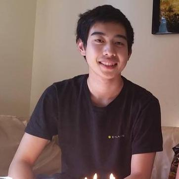
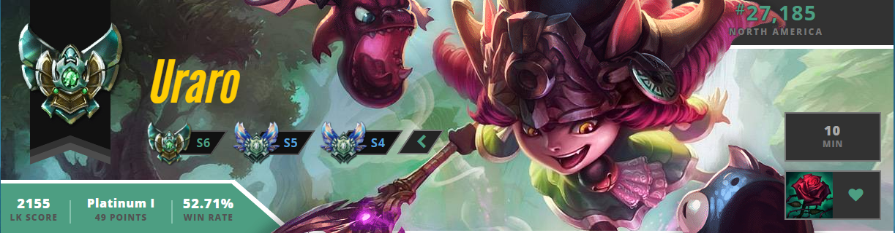
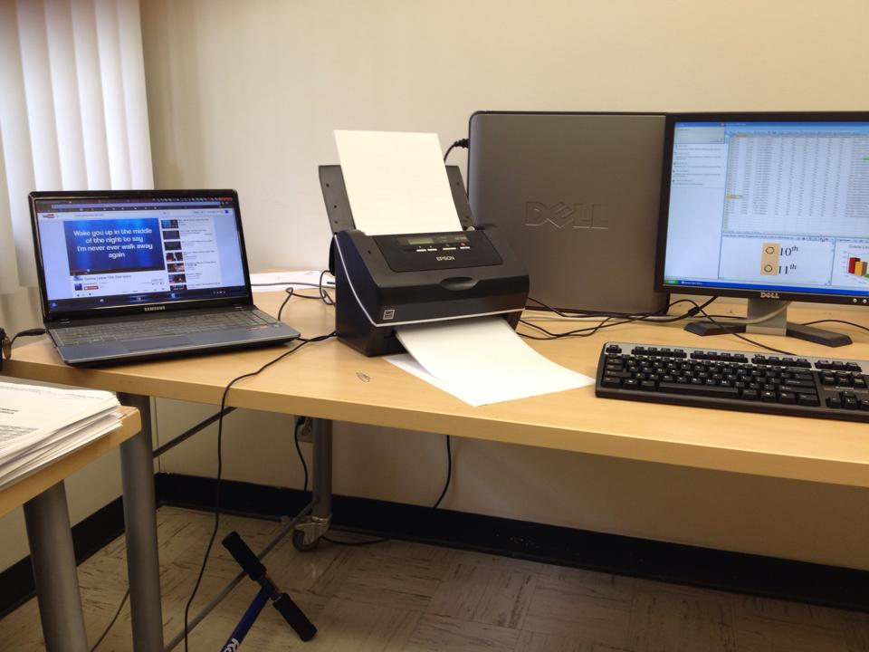
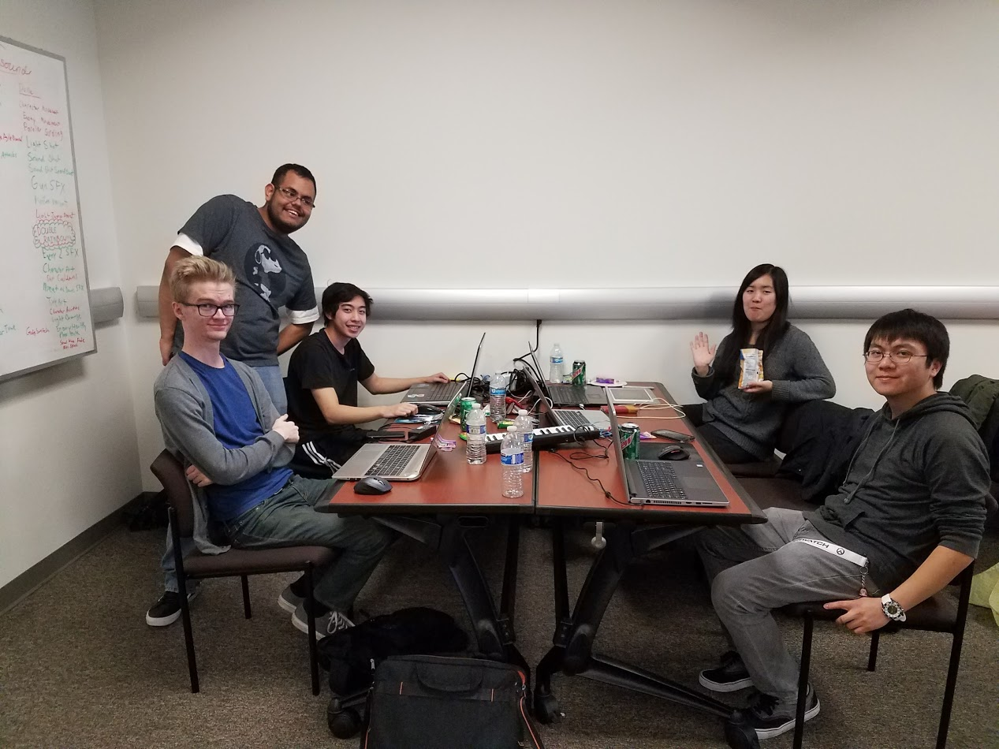

 My passion for games began when my brother had introduced me to many of the technologies that are now considered retro. I had the luxury of being able to play the old Super Nintendo and Nintendo 64 games. As time went on, I had more access to other consoles and handhelds such as my Gameboy Advance and eventually a Windows XP PC. Once my brother bought a computer, he allowed me to have some time to play his games. I fell in love when I made my first ever IGN: "Uraro" and started playing Police Quest SWAT and Warcraft III. This brief glimpse in my childhood is what brought me to my passion for games today. During my years in high school, I had no idea what I wanted to do except that I loved video games. Once senior year hit, I began to consistently play League of Legends. I tried to learn about the mechanics, the item builds, the strategies, everything. I started in season 3 in Gold and only climbed higher from then on. That is when I realized that high school had drained me from doing what I love: being dedicated and involved to games. When college applications hit, I knew I had to choose a major related to games so that I could be involved in what I love. I luckily got accepted to UCI as a Computer Game Science major and have not regretted it since. I honestly did not know of the challenges ahead of me and that making games would be very difficult. I accepted this, however, because my drive to belong with games was enough. The idea that I could influence peoples' lives by making games is just amazing. Like the teams that made the games that influenced my life, I hope to do the same to the future generations.  When I began my first year at UCI, my sister and I decided to try to find an internship for me to start. I ended up becoming a Data Assistant at the Center for Educational Partnerships at UCI and it lasted for 2 years in my Freshman and Sophomore year. During this time, I was able to learn how to use Microsoft Excel to manage data, organize charts, and create pivot tables to use and show to my coworkers to present certain parts of data. I also managed databases in Filemaker Pro with a server provided to me and managed that data as well, adding and removing entries as needed. I left during my Sophomore year because I wanted more experience programming and designing rather than just project management. It was during this time that I had found that programming and designing is much more fun than anything else.  I joined the Video Game Development club and started to get involved in projects. I also decided to participate in Hackathon and had a blast. Thinking of new mechanics and new ways to please players has always been appealing for me. My very first experience was a game I made in Hackathon called "Shut Up and Escape With Me" (linked in the Projects page). It uses the Oculus Rift for vision and a controller for movement. My team and I thoroughly enjoyed the design process and designated roles and also group programmed as well. It was a fantastic experience and made me feel the "other side" of the pendulum of being the ones to make others happy. This is where I really went from a "gamer" to a "game developer" and it really showed when we started to demo our game to people once we submitted our game. The reactions were awesome! People were laughing, getting scared, and figuring out new mechanics of our game. It made me glad to see how many people enjoyed our game made in a few hours and only let me imagine more of how it would be if I could make a full fledged game to present to the world.  Now I have been at Amazon Game Studios - Lumberyard as a Contract Quality Assurance Engineer for one year, but I still have much to learn about the game industry and am constantly looking to improve myself. I am hoping to make the transition to a full-time developer in the near future.